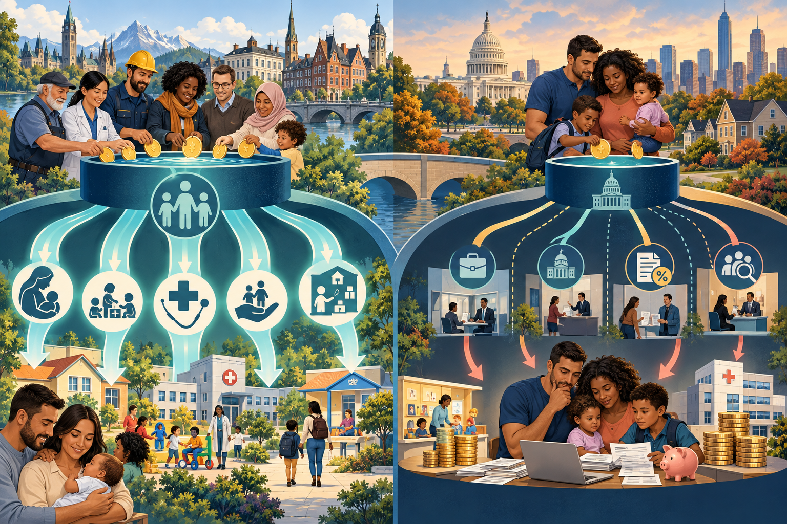

Private choices are made inside economic structures
A family may decide who works, who provides care, where to live, and whether to have children—but wages, schedules, childcare, housing, healthcare, taxes, inherited wealth, and public policy shape which choices are actually possible.
Work connects households to society
An economy is the social institution that organizes the production, distribution, and consumption of goods and services. Families supply paid and unpaid labor, purchase goods, pay taxes, receive benefits, save, borrow, inherit, and teach children how to participate in economic life.
How goods and services are created through labor, technology, land, and capital.
How wages, profits, taxes, benefits, and property are allocated.
How households use income and credit to obtain necessities and other goods.
The caregiving, housework, teaching, and emotional labor that sustain people and prepare the next generation.
Moving model: follow resources through the economy
Watch labor, money, taxes, and services move among households, businesses, government, and public institutions. The system is circular: every institution both contributes and depends on others.
Families turn income into economic circulation
Most families cannot simply hold all the money they earn. Daily life requires continuing purchases: housing, food, utilities, transportation, healthcare, childcare, clothing, education, and household supplies. Contemporary participation also increasingly depends on expenses that earlier generations did not face in the same form. A mobile phone and reliable internet connection may now be necessary for employment, school, healthcare, banking, government services, and maintaining family relationships. In the Bureau of Labor Statistics’ 2024 Consumer Expenditure Survey, housing and transportation alone accounted for slightly more than half of average household spending—evidence that much of a family budget is committed before optional purchases begin.
Housing, food, utilities, medicine, transportation, and caregiving are difficult to postpone without harming well-being.
Phones, internet access, devices, and sometimes particular subscriptions can function as gateways to work, education, information, and services.
Dining out, entertainment, travel, upgrades, and optional subscriptions are often reduced first—but they support real businesses and jobs.
Savings, insurance, and debt repayment compete with current purchases. Cutting these may preserve consumption now while increasing later vulnerability.
The system works more smoothly when households can afford what they purchase. If prices rise faster than income, families begin substituting cheaper products, canceling services, delaying repairs, reducing restaurant and entertainment spending, or using credit. One household’s cutback is another organization’s lost revenue. If many households cut back at once, even previously lucrative industries can lose customers, reduce workers’ hours, postpone hiring, close locations, or buy less from suppliers. Those effects can spread to landlords, transportation systems, advertisers, manufacturers, and public revenue.
Interactive timeline: a century of household spending, 1926–2026
Move the year slider to examine how average annual spending and the household cost landscape changed. BLS means the U.S. Bureau of Labor Statistics, the federal agency that collects and reports information about prices, employment, wages, and household expenditures. Every dollar amount shown here represents the average amount spent by a U.S. household over an entire year—not a monthly bill. Dollar totals are nominal, meaning they reflect the prices of their own time. The plotted dots are national BLS Consumer Expenditure Survey benchmarks; values between dots are simple classroom interpolations, not observed annual estimates.
1926 household context
Costs commonly shaping participation
Reading the endpoints: There is no complete BLS average for 1926, so the display estimates it between the 1918–19 and 1934–36 benchmarks. At the other end, 2026 is the classroom’s present-day context, but the latest complete annual expenditure figure is 2024. The display does not invent a 2026 total.
Interactive: inflation moves from families back through the economy
Inflation is a sustained rise in the general price level. When prices rise faster than wages, the same paycheck buys less. Move both controls to explore an illustrative household response.
Illustrative household cutback ladder
Longer bars mean the family can preserve more of that category. This is a conceptual model—not a prediction or a claim that every family cuts spending in the same order.
Economic change enters the home
| Economic process | What changes | Possible family effects |
|---|---|---|
| Deindustrialization | Stable manufacturing employment declines in a region. | Job loss, migration, reduced benefits, stress, and changed provider roles. |
| Globalization and outsourcing | Production and services cross national borders. | Lower prices or new jobs for some; displacement and wage pressure for others. |
| Automation and digital work | Technology changes tasks, skills, scheduling, and location. | Flexibility for some families; surveillance, insecurity, or retraining needs for others. |
| Labor organization | Workers bargain individually or collectively over pay and conditions. | Differences in wages, healthcare, leave, predictability, and family time. |
Apply the Big Three—and feminist theory
Work provides income, identity, specialization, and social interdependence. Family care supports the labor force; instability in either institution can strain the other.
Employers, workers, owners, and households do not have equal control over wages, schedules, policy, or productive resources.
People learn meanings attached to “provider,” “good worker,” “successful family,” “stay-at-home parent,” and deservingness.
Paid and unpaid labor are gendered. Care work may be essential yet underpaid, unpaid, or treated as a private responsibility.
Income pays this month; wealth changes the range of choices
Income is the flow of money received during a period. Wealth is the value of assets minus debts. Two families with the same income may have very different security if one has savings, home equity, retirement accounts, or inherited resources and the other has debt.
Stress produced when resources do not reliably meet housing, food, care, health, transportation, and debt obligations.
People who work for pay but still cannot consistently meet basic needs.
Disadvantage measured against the living standards and participation expectations of a society.
Severe deprivation of resources needed for basic survival and health.
Interactive: build the Martinez family budget
Enter monthly amounts. The exercise demonstrates tradeoffs; it is not a claim about what every family “should” spend.
Interactive: who pays—and who benefits?
The answer changes when the lens changes.
Select a lens. Bar lengths are a conceptual teaching model—not tax rates or a tax calculator.
Why the middle can feel squeezed: middle-income families may earn too much for means-tested assistance, have most income reported as wages, pay payroll and income taxes automatically, and still face childcare, housing, healthcare, and education costs. Whether they pay a higher overall effective rate than the wealthiest depends on the year, household, income source, tax jurisdiction, and taxes counted.
Paid work changed faster than care expectations
Women’s participation in paid labor transformed family life, yet housework, childcare, eldercare, and the mental work of planning remain unevenly distributed in many households. Gender also shapes occupations, wages, promotion, flexibility, and the penalties associated with caregiving.
| Concept | Meaning | Family consequence |
|---|---|---|
| Motherhood penalty | Mothers may experience lower earnings or advancement associated with caregiving expectations and employment interruption. | Less current income, bargaining power, Social Security credit, and retirement saving. |
| Fatherhood premium | In some settings, fathers are perceived as more stable or deserving of pay, though patterns vary by race, class, and occupation. | Provider expectations may raise earnings while also discouraging leave or care. |
| Glass ceiling | Invisible barriers to upper leadership positions. | Limits income, authority, benefits, and wealth accumulation. |
| Glass escalator | Advantages some men may receive in women-dominated occupations; not universal and shaped by race and sexuality. | Promotion patterns can reproduce inequality even within care professions. |
| Family work | Unpaid household maintenance, caregiving, emotional support, and coordination. | Makes paid employment possible but consumes time and affects health and careers. |
There are only twenty-four hours in a day
Dual-earner families may gain income and security while facing schedule conflicts, role overload, childcare costs, and reduced time for relationships or rest. Single parents often coordinate the same institutions with one adult’s time and income. Remote work can reduce commuting yet blur boundaries and does not replace childcare.
Interactive: make the time conflict visible
Interactive: compare family supports across industrialized countries

The comparison is not “other countries receive benefits and Americans receive nothing.” The sociological difference is how much caregiving risk is pooled publicly and how much remains with individual households and employers.
Select a policy system. The comparison describes national policy patterns; actual eligibility, payment, length, state/provincial programs, employer benefits, and implementation vary.
Use the economic lens
1. Two families earn $70,000, but one owns a home and has $100,000 in savings while the other has student debt and no savings. Which concept best explains their different security?
2. A working family receives a refundable income-tax credit but still has Social Security and Medicare withheld. What is the best conclusion?
3. A parent turns down a promotion because the new schedule conflicts with childcare. Which interpretation is most sociological?
4. Why does paid leave matter to family inequality?
Key concepts
- Economy: Institution organizing production, distribution, and consumption.
- Work: Paid or unpaid effort that produces goods, services, care, or household maintenance.
- Income: Money received during a period.
- Wealth: Assets minus debts.
- Social class: Position shaped by income, wealth, education, occupation, prestige, and power.
- Economic pressure: Stress when resources do not reliably meet needs.
- Working poor: People employed for pay whose resources remain inadequate.
- Absolute poverty: Severe deprivation of survival necessities.
- Relative poverty: Disadvantage compared with a society’s living standards.
- Underemployment: Fewer hours or lower-skilled work than a worker wants or is prepared for.
- Discouraged worker: A person who wants work but stopped searching and is not counted as unemployed.
- Deindustrialization: Decline of manufacturing employment.
- Globalization: Increasing cross-border connection of production, trade, labor, and finance.
- Inflation: A sustained increase in the general price level.
- Purchasing power: The amount of goods and services money can buy.
- Household consumption: Family spending on goods and services, including both necessities and discretionary purchases.
- Discretionary spending: Spending that can generally be postponed more readily than basic necessities, though its meaning varies by household.
- Economic ripple effect: The spread of one household’s or industry’s economic change to workers, businesses, suppliers, government revenue, and other institutions.
- Nominal dollars: Dollar amounts measured in the prices of the period, without adjusting for inflation.
- Household cost landscape: The historically changing set of goods and services families commonly need to participate in social and economic life.
- Social Security (OASDI): Federal old-age, survivors, and disability social insurance financed mainly through payroll taxes.
- Pay-as-you-go: Financing in which current contributions largely pay current benefits.
- Worker-to-beneficiary ratio: The number of covered workers paying Social Security taxes for each person receiving benefits.
- Tax expenditure: Revenue forgone through exclusions, deductions, credits, preferential rates, or deferral.
- Means-tested benefit: Assistance limited by income or resources.
- Refundable credit: Tax credit that can exceed income-tax liability.
- Payroll tax: Tax on earnings funding programs such as Social Security and Medicare.
- Occupational segregation: Unequal concentration of groups across jobs.
- Motherhood penalty: Employment or earnings disadvantage associated with motherhood and caregiving.
- Family work: Unpaid care, housework, emotional labor, and coordination.
- Role overload: More demands than time and resources can reasonably meet.
- Work–family conflict: Incompatible demands between employment and family roles.
- Paid family leave: Job leave with partial or full wage replacement for qualifying family needs.
References
- Congressional Budget Office. (2026). The distribution of household income, 2022. https://www.cbo.gov/publication/61911
- U.S. Bureau of Labor Statistics. (2025). Consumer expenditures—2024. https://www.bls.gov/news.release/cesan.nr0.htm
- U.S. Bureau of Labor Statistics. (2006). 100 years of U.S. consumer spending: Data for the nation, New York City, and Boston. https://www.bls.gov/opub/100-years-of-u-s-consumer-spending.pdf
- U.S. Bureau of Labor Statistics. (2014). Consumer expenditures in 2012. https://www.bls.gov/cex/research_papers/pdf/consumer-expenditures-in-2012.pdf
- U.S. Bureau of Labor Statistics. (2019). Consumer expenditures in 2017. https://www.bls.gov/opub/reports/consumer-expenditures/2017/
- Internal Revenue Service. (n.d.). Earned Income Tax Credit (EITC). https://www.irs.gov/credits-deductions/individuals/earned-income-tax-credit-eitc
- Internal Revenue Service. (n.d.). Understanding employment taxes. https://www.irs.gov/businesses/small-businesses-self-employed/understanding-employment-taxes
- Organisation for Economic Co-operation and Development. (2025). OECD Family Database: PF2.1 Parental leave systems. https://www.oecd.org/els/soc/PF2_1_Parental_leave_systems.pdf
- Organisation for Economic Co-operation and Development. (2023). OECD Family Database: PF1.1 Public spending on family benefits. https://www.oecd.org/els/soc/PF1_1_Public_spending_on_family_benefits.pdf
- U.S. Bureau of Labor Statistics. (2025). Women in the labor force: A databook. https://www.bls.gov/opub/reports/womens-databook/
- U.S. Department of Labor. (2025). Fact Sheet #28: The Family and Medical Leave Act. https://www.dol.gov/agencies/whd/fact-sheets/28-fmla
- Government of Canada. (2025). EI maternity and parental benefits. https://www.canada.ca/en/services/benefits/ei/ei-maternity-parental.html
- Swedish Social Insurance Agency. (2025). Parental benefit. https://www.forsakringskassan.se/english/parents/when-the-child-is-born/parental-benefit
- Social Security Administration. (2025). Fast facts & figures about Social Security, 2025. https://www.ssa.gov/policy/docs/chartbooks/fast_facts/2025/fast_facts25.html
- Social Security and Medicare Boards of Trustees. (2025). A summary of the 2025 annual reports. https://www.ssa.gov/oact/trsum/
Image note
The opening illustration was created for this SOC-213 coursebook and is a conceptual teaching image rather than documentary evidence.
Interactive: Social Security’s worker-to-beneficiary ratio
Social Security is federal social insurance. Its retirement, survivor, and disability programs are collectively called OASDI—Old-Age, Survivors, and Disability Insurance. It is financed mainly through payroll taxes and operates largely on a pay-as-you-go basis: taxes collected from today’s workers primarily fund today’s beneficiaries, with trust-fund reserves also part of the financing system.
Do not read the icons literally: payroll taxes are pooled; one named worker does not fund one named beneficiary. There is no single official “optimal” ratio. A higher ratio generally makes financing easier if tax rates, wages, and benefits stay the same, but solvency also depends on wage growth, employment, taxable earnings, longevity, fertility, immigration, benefits, tax rates, and trust-fund reserves. The 1:1 setting is a classroom stress test, not an SSA projection.